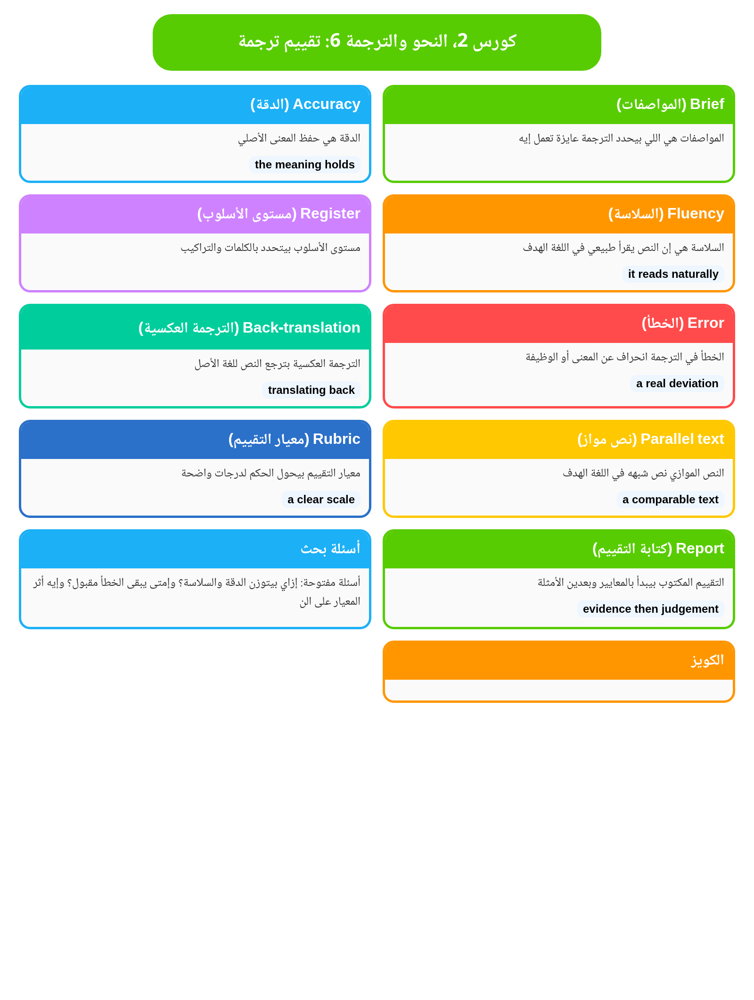

آداب الإنجليزية
: قواعد وجرامر وشعر وأساطير
⭐
0
🔥
استمر!
📝
كورس 2، النحو والترجمة 6: تقييم ترجمة
📊
المستوى: من الصفر
كورس ٢ درس ١١٨
💬
القواعد الأكاديمية
📄 حمّل PDF الدرس
🧠 الخريطة الذهنية PDF
🧠 شوف الخريطة الذهنية للدرس

→
الدرس اللي قبله
كل دروس الكورس